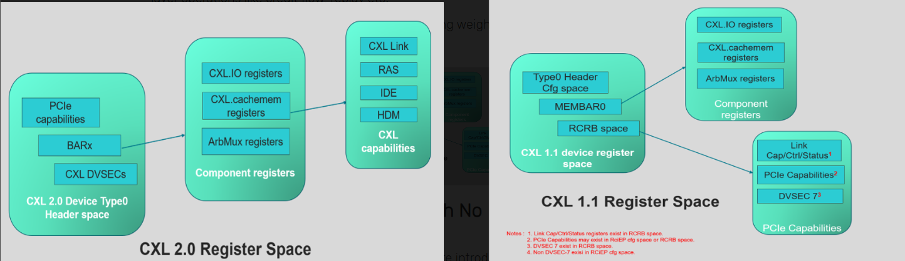

CXL 寄存器
按照寄存器所在的位置进行分类，CXL 相关控制及状态寄存器可分为两类：
一类位于 PCIe 配置空间 （Configuration Space），只能通过配置读写请求来访问； 一类位于 MMIO 区域 （Memory Mapped Space），只能通过 Memory 读写请求进行访问。

DVSEC
在 PCIe 配置空间中，以 DVSEC 的形式实现了 CXL 相关的能力结构。这个原本是为厂商预留的，正好CXL可以使用，且为CXL分配了一个 vendor ID 0x1E98.
截至 CXL 3.0 共定义了以下 9 组 CXL 相关的 DVSEC：
-
PCIe DVSEC for CXL Devices ，又称 CXL PCIe DVSEC，所有 RCD、LD、SLD、FMLD 等 CXL Device 的 D0F0 必须实现该 DVSEC，软件根据 Device 配置空间中是否实现了该 DVSEC 来判断 Device 为 PCIe Device 还是 CXL Device 。
-
Non-CXL Function Map DVSEC ，用以指示多 Device、多 Function 设备中不支持 CXL.cachemem 的 Device 或 Function。
-
CXL Extensions DVSEC for Ports ，仅用于 RP、DSP 及 USP，在 PCIe 枚举层级之外维护一条 RCH-RCD 层级。
-
GPF DVSEC for CXL Ports ，用于 CXL Port 中的 GPF 相关能力，主要用以控制 GPF Phase1、Phase2 的 Timeout 值。
-
GPF DVSEC for CXL Devices ，用于 CXL Device 中的 GPF 相关能力，主要用以指示 GPF Phase2 的 Timeout 值及 Phase2 期间的功耗。
-
PCIe DVSEC for Flex Bus Port ，又称 Flex Bus Port DVSEC，用以控制及指示 Flex Bus 相关能力，是给 Multi-Device 场景预留的能力结构，CXL 1.1 以上所有 CXL Port/Device 均需实现该能力结构。CXL 链路训练期间 Modified TS 中的 Flex Bus 相关信息多来源于该能力结构中的寄存器，接收到对端发来的 Modified TS Info 也会记录在该能 DVSEC 相关寄存器中。对于实现了 RCRB 的 RCH/RCD，该 DVSEC 位于 RCRB 中。
-
Register Locator DVSEC ，该能力结构中存放有一个或多个 CXL 寄存器块的 Entry。
-
MLD DVSEC ，仅适用于 FM 所属的 LD，用于 MLD 相关 Capability，比如指示支持的 LD 数量、LD-ID 热复位向量。
-
PCIe DVSEC for Test Capability ，用于 CXL Compliance 测试，在 CXL Compliance 测试过程中对该 DVSEC 进行配置，并根据该 DVSEC 内容进行相关测试。
9 组 CXL DVSEC 之间通过 DVSEC ID 加以区分

Reg in MMIO
上文提到了 9 组实现在 PCIe 配置空间的 CXL 相关 DVSEC。鉴于部分 CXL 组件不具备 PCIe 配置空间，且 PCIe 配置空间 4KB 较小难以满足 CXL Component Register 的 Size 要求，此时 CXL 相关的 DVSEC 及 Component Register 可以实现在 Memory Mapped 空间（MMIO），通过 Memory 读写请求进行访问。
截至 CXL 3.0，CXL 协议定义了 6 类位于 MMIO 中的寄存器：
RCH DP RCRB ，可视为 RCH 的 4KB 配置空间，跟其 MEMBAR0 范围不重叠，基地址由 ACPI 指定。 RCH DP Component Register ，包括 CXL 协议层、链路层、物理层及 ARB/MUX 等组件相关的寄存器，共 64KB，其位于 RCH DP RCRB 指定的 64b MEMBAR0 范围内 （物理上位于 RCH 端）。 RCD UP RCRB ，可视为 RCD 的 4KB 配置空间，跟 RCH DP RCRB 占用连续的两个 4KB 空间，其可以（不强求）跟 RCH DP 的 Memory 范围（非 MEMBAR0）重叠。RCD UP RCRB 的基地址采用 RCD 复位后收到的 RCH DP 发来的第一笔 MRd（CXL 1.1 时 MRd/MWr 均可）的地址。 RCD UP Component Register ，包括 CXL 协议层、链路层、物理层及 ARB/MUX 等组件相关的寄存器，共 64KB；对于实现了 RCRB 的 RCD，该寄存器块位于 RCD UP RCRB 指定的 64b MEMBAR0 范围内 （物理上位于 RCD 端），该范围同时处于 RCH DP 的 Memory 范围（非 MEMBAR0）之内；对于未实现 RCRB 的 RCD，该组寄存器的具体类型及位置 由 Register Locator DVSEC 来指定 Component Register for ALL Other CXL Components ，其他 CXL Component 相关寄存器。这组寄存器的具体类型及位置 由 Register Locator DVSEC 来指定 。 CXL Host Bridge Component Register (CHBCR)，CXL Host Bridge 组件寄存器，目前主要用于控制多 RP 之间的 Memory Interleaving，其基地址从 ACPI CEDT 中取得。 上述 RCRB 及 Components Register 在地址空间中的分布示意图如下。CHBCR 及 Register Locator DVSEC 指定的 Component Registers for All Other CXL Components 位置不定，未包含在此图中。

参考：这个博主感觉很厉害，有很多PCIe和CXL相关文章，很详细，精彩。blog